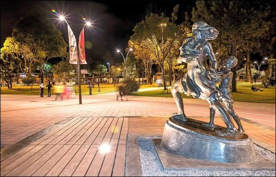

Los primeros años
El espacio comenzó a configurarse como el Parque del Ejército, en el sector de El Ejido. Con el tiempo se convirtió en un lugar de paseo y recreación para los habitantes de Cuenca.
Patrimonio y memoria de Cuenca
Un homenaje a la maternidad, al cuidado y al amor que forman parte de la memoria de la ciudad.
Descubre su historiaEl Parque de la Madre es uno de los espacios públicos tradicionales de Cuenca. Su monumento central recuerda la importancia de las madres y de las personas que cuidan, acompañan y protegen a sus familias.
Una historia que permanece
Del antiguo Parque del Ejército a uno de los espacios más reconocidos de la ciudad.
El espacio comenzó a configurarse como el Parque del Ejército, en el sector de El Ejido. Con el tiempo se convirtió en un lugar de paseo y recreación para los habitantes de Cuenca.
El Club Rotario de Cuenca entregó a la ciudad el monumento dedicado a la Madre Cuencana. La obra fue realizada por el escultor Paúl Palacio y representa a una madre en actitud protectora junto a sus hijos.
El parque fue remodelado para fortalecer su uso recreativo y deportivo, con mejoras en áreas verdes, caminerías, pista atlética y espacios para distintos grupos de visitantes.
El Municipio informó sobre trabajos de mantenimiento, reparación de la pista atlética y restauración del entorno del monumento, para conservar este espacio público para la comunidad.
¿Por qué se levantó este monumento?
El monumento fue concebido como una expresión pública de gratitud y reconocimiento a las madres. La figura materna aparece protegiendo a sus hijos, una imagen que evoca ternura, valentía, responsabilidad y entrega.
Su valor no está solamente en la escultura: también invita a reflexionar sobre el papel de la familia, el cuidado mutuo y el respeto hacia quienes acompañan nuestro crecimiento.
“Recordar a una madre es reconocer una de las formas más profundas del cuidado humano.”
Imágenes del lugar
Un recorrido visual por el monumento y los espacios del Parque de la Madre.

Las fotografías documentales se atribuyen a sus fuentes enlazadas; algunas imágenes de naturaleza son ilustrativas.
¿Dónde se encuentra?
En el sector de El Ejido, junto al río Tomebamba, entre las avenidas 12 de Abril y Federico Malo y la calle Florencia Astudillo.
Ver ubicación en el mapa ↗Proyecto educativo
La Unidad Educativa Guillermo Mensi, institución educativa de Cuenca, promueve mediante este recurso el aprendizaje, la investigación y la difusión del patrimonio local. Esta página busca acercar la historia del monumento a estudiantes, familias y visitantes, utilizando la tecnología como herramienta para compartir conocimientos.
Creación de la página: Unidad Educativa Guillermo Mensi
Propósito: exposición educativa y difusión cultural mediante código QR.
Gracias por apoyar este proyecto
Un espacio para reconocer a las personas, negocios e instituciones que apoyan la difusión de la historia y el patrimonio de Cuenca.
Las tarjetas son espacios de muestra. Reemplaza las imágenes y los nombres por los de los auspiciantes confirmados antes de publicar la página.
La reseña se ha resumido para una exposición breve. Para uso institucional, se recomienda validar el texto final con el docente responsable.